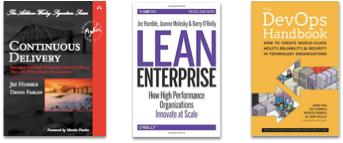

As a ThoughtWorks consultant I was sent to clients to assess the way they developed software and present the findings back to them. Sometimes I did this solo, and sometimes as a team. My focus was always the foundational aspects of development. In the mid 2000’s if the assessment was titled at all, it was called an “Agile assessment”. After Jez Humble and Dave Farley’s best seller "Continuous Delivery"1 (2010) the assessment was expanded and re-titled to a “CD Assessment”. Same again in 2013, expanded and retitled to DevOps Assessment. I’m veteran of 20 or so assessments, amongst the general leadership of application development and delivery for clients tht I have done over the years.
I am part of the science and history of DevOps
I’m also a pivotal part of science. I’ve always evangelized Trunk-Based Development (TBD), and joining ThoughtWorks in 2002 let me to turn my Agile (Extreme Programming) interest/hobby into something I was paid to do every day. I evangelized TBD inside TW too, and flipped all of my clients to that branching model soon after being staffed on each account. In 2005, I assessed, presented the resulting findings, then started at Bank of America’s GFX group in Chicago. The team was using ClearCase in a multiple long-running branch scenario, and it took a lot of choreography to pull a dev team of 100s in to Trunk-Based Development without dropping a release, or cutting scope each release. In fact the migration was multi-faceted and documented here, and a huge personal achievement for me.
¶Branch by Abstraction (first blogger)
Part of that BofA migration, involved the creation of technique to counter the pressure to create a long-lived branch that would merge “back” later. It has been widely documented since, but I wrote the first blog entry on it (and the name has stuck) 2. Most likely the technique was already in use elsewhere, sporadically, but not documented. So I did not invent it as such, just put it on the map. Jez and Dave included the artwork I made for the BofA mission that also featured in that blog entry (anonymized back then) in the “Continuous Delivery” book1.
¶Trunk-Based Development (again)
So I blog a lot about TBD. Forty articles to be precise. ThoughtWorks placed me at Google for 20 months in the Test Mercenaries team, and I got to see how they organize their expanding/contracting monorepo for unbeatable DevOps performance. At lot of my log entries are attempts to teach the DevOps lessons from Google.

Jez, to this day, likes to rabble-rouse with statements on Trunk-Based Development (that I completely agree with):
after 10 years of giving talks on this, trunk-based development is still the idea that causes most controversy today! pic.twitter.com/5EK7LQgvkh
— Jez Humble (@jezhumble) October 17, 2016
It remains the big un-learned lesson of high-throughput DevOps centric teams, and massively misunderstood. That Google, Facebook and many other lauded companies do TBD at scale is lost on most people in the industry, and many even in the DevOps community. Indeed ThoughtWorks placed me at Google as mentioned, and I asked Joe Walnes (who has left TW to join Google some months before) whether Google did TBD before arriving, and he commented that I “would be pleased with what I encounter”, and not be drawn further. I quickly pushed out the "Introducing Branch by Abstraction"2 blog entry just in case Google controlled the blogging of development staff (and consultants).

My leadership on Trunk-Based Development, saw my materials contribute to the “Continuous Delivery” book (with acknowledgement). Also Jez’s following book - “Lean Enterprise” (with Barry O’Reilly and Joanne Molesky) features some of my materials in an attempt to catalog developer team practices associated with Trunk-Based Development. I’m also mentioned in Jez’s most recent book (with co-authors Gene Kim, Patrick Debois, John Willis) "The DevOps Handbook"3, but only in passing and to do with “Application Strangulation case studies”.
And to underline, all these references, nobody has written more than me on TBD and branch by abstraction, or as long as I have on those topics. With friends, I made an informational site to pull all of the related topics together: TrunkBasedDevelopment.com.
¶Other innovations and firsts
¶Selenium v1

I am co-creator of the defacto-standard web testing technology, Selenium in 2004. That was v1, with Jason Huggins, and we very early open-sourced it to begin the log slog to gain industry patronage. Selenium is at v3 now and a multi million dollar industry on its own. It has long since eclipsed QTP in importance, and long since deleted our last lines of code from the v1 days. It is definitely a pivotal DevOps tool.
¶PicoContainer and Dependency Injection
I am co-creator of the first Dependency Injection (DI) container that did “Constructor Injection” called PicoContainer (in any language) in 20034. The other co-creator was Aslak Hellosøy who’s more famous for being the lead developer of the defacto-standard Cucumber BDD technology these days, as well as co-founder of a startup around it5. Indeed, towards that, I was chief evangelizer of “Inversion of Control” (IoC) inside ThoughtWorks before Martin Fowler published his highly influential article "Inversion of Control Containers and the Dependency Injection pattern"6. That article effectively renamed IoC to DI. Note my name at the bottom of Martin’s article.
Of course these days, we all like the practice of using constructors for passing dependencies into components (rather than shared static state), but not as much the containers. At least not as much as we did back then.
¶Legacy Refactoring: Least depending, most depended on first
This approach to a large refactoring agenda came out of my Bak of America mission. I first documented it for InfoQ in 20089. It was referenced in a follow up “refactoring experiment” article 10, and updated and made into a PDF in 201311. Actual animations from the BofA recommendation deck were redone in JavaScript and SVG for a blog entry on “tweening” in 2016 for fun12.
¶Test Impact Analysis towards running less tests
If you have 1000 tests taking 10 seconds each, or 10000 tests taking 1 second each, that is 2.7 hours to execute them all. Microsoft is now talking about the same ideas too [1]m [2].
¶Configuration as Code
TODO
¶Client Side MVC
Because of a friendship with the authors of Angular, I was able to prepare and push a blog entry7 on it the same day as Miško Hevery announced the tech for the first time on his blog 8 in 2009. Ever since I have been a huge fan of its terse & expressive style, and the stroke of genius that extending HTML was. I’ve written 29 blog entries on “Client Side MVC” since then, all focused on the potential for development cost reductions that this class of technology heralds (if done right). As an application technology choice, there’s definitely a DevOps benefit.
- 1.Continuous Delivery: Reliable Software Releases through Build, Test, and Deployment Automation (published Aug, 2010) ↩
- 2.Introducing Branch By Abstraction (published Apr, 2007) ↩
- 3.The DevOps Handbook: How to Create World-Class Agility, Reliability, and Security in Technology Organizations (published Oct, 2016) ↩
- 4.Inversion of Control History ↩
- 5.Cucumber.io: The company behind Cucumber & Cucumber Pro ↩
- 6.Inversion of Control Containers and the Dependency Injection pattern (Jan, 2004, Martin Fowler's site) ↩
- 7.Angular - HTML based Declarative UI (also one to watch) (published Sep, 2009) ↩
- 8.Hello World, <angular/> is here (published Sep, 2009) ↩
- 9.Drinking your Guice too quickly? (Apr, 2008, InfoQ) ↩
- 10.Refactoring Experiment - 'least depending and most depended on' components first (Sep, 2011, my blog) ↩
- 11.A Singleton Escape Plan (Mar, 2013, PDF on my blog) ↩
- 12.Java legacy hairball: refactoring case-study (Jul, 2016, my blog) ↩
- 99. ↩